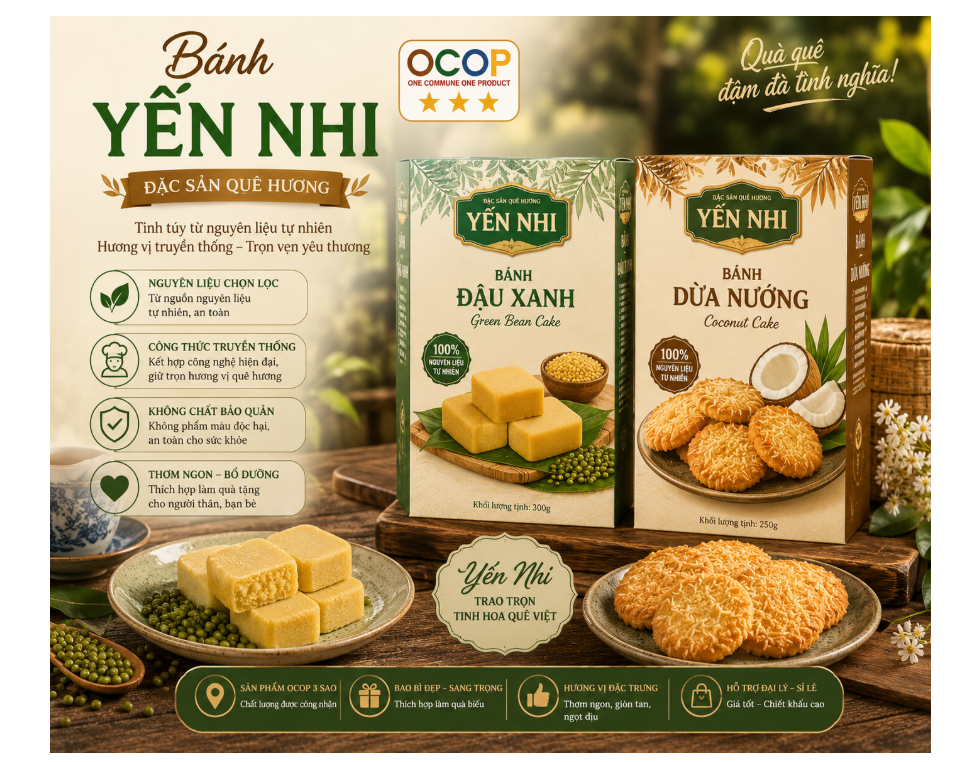

Bạn đang tìm một món quà vừa ngon miệng, đẹp mắt, mang đậm hương vị truyền thống để thưởng thức cùng gia đình, làm quà biếu người thân, bạn bè hay dành tặng những người thân yêu? Bánh đậu xanh và bánh dừa nướng Yến Nhi – sản phẩm OCOP 3 sao là một lựa chọn đáng để bạn khám phá.
Mang trong mình hương vị thân thuộc của những nguyên liệu gần gũi, bánh Yến Nhi là sự kết hợp giữa nét truyền thống và cách chế biến, đóng gói hiện đại. Mỗi sản phẩm không chỉ là một món bánh mà còn gửi gắm câu chuyện về quê hương, về những hương vị dân dã đã gắn bó với bao thế hệ người Việt.

🌱 Bánh đậu xanh – vị thơm bùi, mềm tan
Được làm từ nguyên liệu đậu xanh, bánh mang vị bùi, thơm đặc trưng, kết cấu mềm mịn và dễ thưởng thức. Một miếng bánh nhỏ dùng cùng tách trà nóng có thể gợi lên cảm giác bình dị, thân quen của những buổi sum họp gia đình.
Bánh đậu xanh Yến Nhi phù hợp để thưởng thức trong những dịp gặp gỡ bạn bè, dùng trong gia đình hoặc làm món quà nhỏ gửi đến người thân. Bao bì được thiết kế trang nhã, lịch sự, thuận tiện khi mua làm quà.
🥥 Bánh dừa nướng – thơm giòn, hấp dẫn
Nếu bánh đậu xanh mang đến vị bùi nhẹ nhàng thì bánh dừa nướng Yến Nhi lại gây ấn tượng bởi hương thơm đặc trưng của dừa và cảm giác giòn, hấp dẫn khi thưởng thức.
Hương dừa quen thuộc kết hợp cùng cách chế biến phù hợp tạo nên một món bánh dân dã nhưng đầy cuốn hút. Đây là lựa chọn thích hợp cho những ai yêu thích các sản phẩm bánh truyền thống và muốn tìm lại những hương vị gần gũi của quê nhà.
⭐ Sản phẩm OCOP 3 sao – niềm tự hào của sản phẩm quê
Được công nhận OCOP 3 sao, bánh Yến Nhi là sản phẩm mang giá trị đặc trưng của địa phương, góp phần đưa những sản phẩm truyền thống đến gần hơn với người tiêu dùng.
Từ nguyên liệu quen thuộc đến hình thức bao bì, sản phẩm hướng đến sự hài hòa giữa giá trị truyền thống và nhu cầu sử dụng hiện đại. Không chỉ phục vụ nhu cầu thưởng thức, bánh Yến Nhi còn là một gợi ý ý nghĩa dành cho những ai muốn lựa chọn đặc sản địa phương làm quà.
🎁 Một hộp bánh – một món quà quê.
☕ Một miếng bánh – một chút hương vị thân quen.
💚 Một sản phẩm – một câu chuyện về quê hương.
Nếu bạn đang tìm một món quà vừa gần gũi, vừa lịch sự để dành tặng gia đình, bạn bè, khách hàng hoặc đối tác, hãy thử lựa chọn Bánh đậu xanh và Bánh dừa nướng Yến Nhi OCOP 3 sao.
Yến Nhi – Đặc sản quê hương, đậm đà hương vị Việt.
Hãy thưởng thức, chia sẻ và cùng ủng hộ những sản phẩm quê hương được làm nên từ tâm huyết của người sản xuất địa phương!
THÔNG TIN LIÊN HỆ
THEO DÕI CHÚNG TÔI